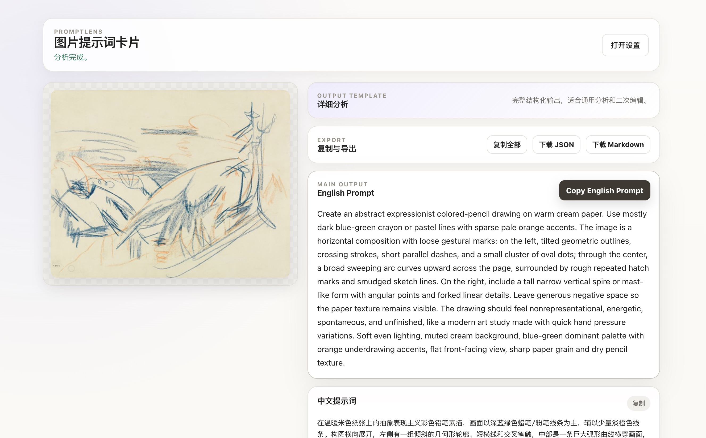
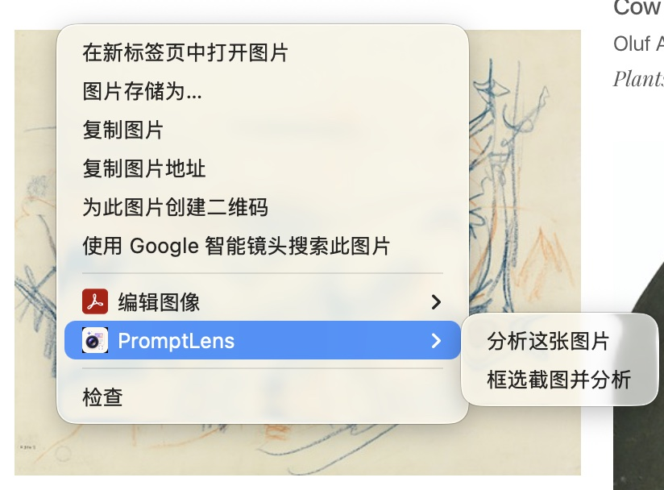
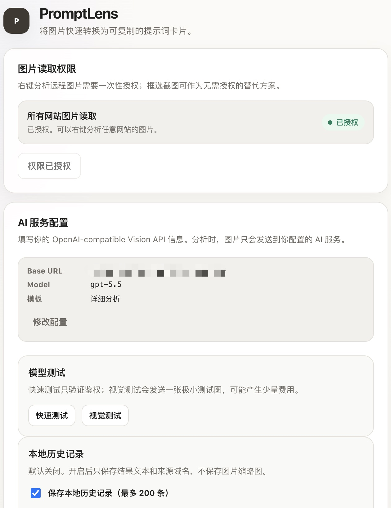

Right-click image analysis
Analyze web images directly from the browser context menu.
Local-first Chrome MV3 extension
PromptLens is a local-first Chrome extension that analyzes web images or selected screenshot regions with your own OpenAI-compatible Vision API.
Chrome Web Store listing is planned.



Features
PromptLens stays lightweight: no account system, no bundled model service, and no build step.
Analyze web images directly from the browser context menu.
Use Alt+Shift+S on Windows/Linux or Option+Shift+S on macOS to select a visible page region when images are protected, embedded, or hard to access.
Use any OpenAI-compatible Vision API by configuring your Base URL, API key, and model.
Get Chinese prompts, English prompts, tags, negative prompts, JSON prompts, and raw JSON.
How it works
Right-click a web image or select a visible screenshot region with Alt+Shift+S on Windows/Linux or Option+Shift+S on macOS.
PromptLens validates, crops, compresses, and normalizes the image in your browser.
The prepared image is sent directly to your configured OpenAI-compatible Vision API.
Product screenshots
Start from a right-click action on a web image or the current page.
Set your OpenAI-compatible Base URL, API key, model, and image preferences.
Copy fields individually, export JSON, or download Markdown from the result page.
Privacy-aware
PromptLens stores your configuration in your browser. The extension does not run a backend service, does not provide a default proxy, and does not collect telemetry.
Read the full Privacy PolicyPermissions
These permissions match the current Chrome MV3 manifest.
| Permission | Why PromptLens uses it |
|---|---|
contextMenus |
Adds right-click actions for image analysis and screenshot selection. |
storage |
Stores API configuration, templates, local history settings, and temporary input state in the browser. |
activeTab |
Supports current-tab screenshot capture after the user starts screenshot selection. |
scripting |
Injects the screenshot selection overlay into the active page after user action. |
Optional <all_urls> host permission |
Optional site access requested only when needed to read remote images or access the user-configured API origin; it is not a required install-time site permission. |
User-triggered: activeTab and scripting are used only when you start screenshot selection.
No background scanning: PromptLens does not continuously inspect pages in the background.
Optional site access: You can refuse remote image read permission and use screenshot selection instead.
Install
Use the latest release package or follow the source install instructions.
Download from GitHub ReleasesChrome Web Store listing is planned.
chrome://extensions.FAQ
No. PromptLens is a frontend-only extension. You bring your own OpenAI-compatible Vision API endpoint, API key, and model.
No. PromptLens does not operate a backend server. When you trigger analysis, the selected image data is sent directly from your browser to the API endpoint you configure.
Your API key is stored locally in Chrome extension storage. It is not sent to PromptLens, but browser-local storage is not a hardware security vault. You should only use this extension on devices and browser profiles you trust.
Local history is off by default. When enabled, it stores text results, source domain, template metadata, and structured output in IndexedDB. It does not save image thumbnails.
Remote image analysis may require optional permission to read image URLs from websites. This is not a required install-time site permission. You can skip this and use screenshot selection instead.